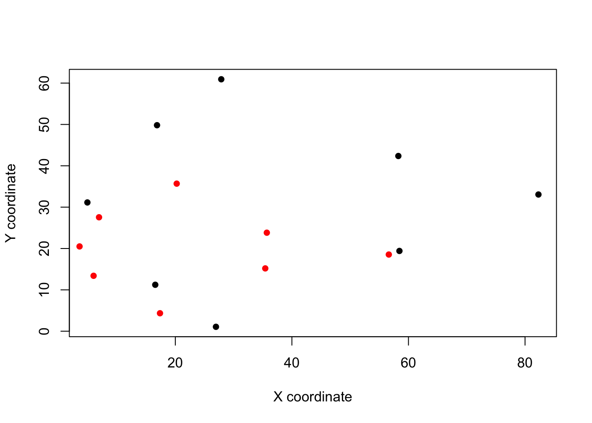
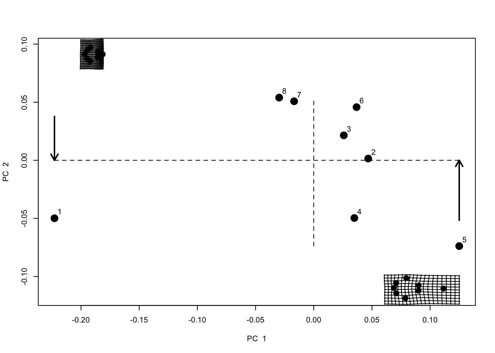
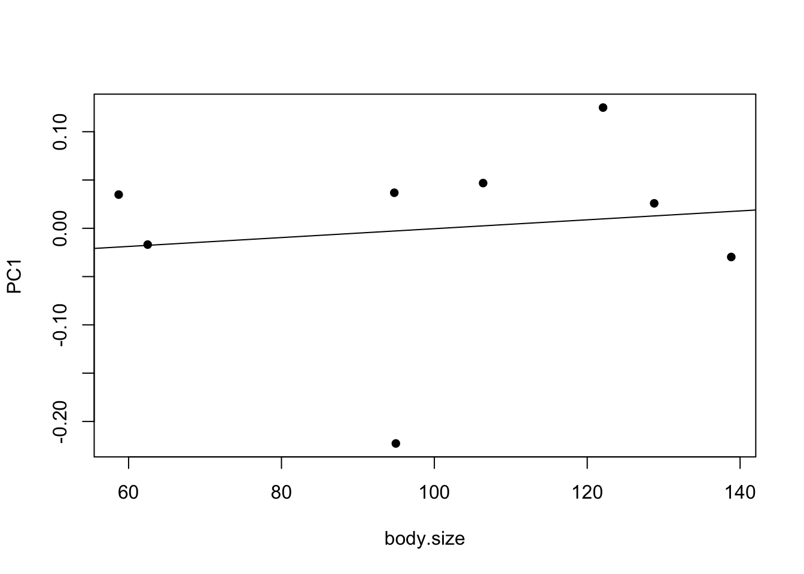
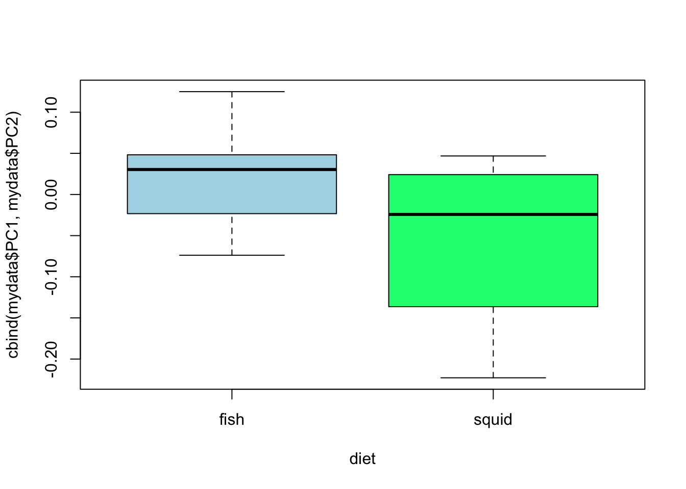

Practical 8 Geometric Morphometrics in R
The aims of this practical are to learn how to use R to perform simple geometric morphometrics analyses.
We will use a data set of ventral skull views for eight species of toothed whales (Odontoceti) taken by a previous Masters student (Dan Bell). Download the eight photographs, and place them into your working directory.
REMEMBER
- Download all of the data for the practical into a folder somewhere on your computer.
- Set your working directory to this folder.
- Start a new script for this practical.
You will also need to install the following packages:
geomorph
8.1 A quick introduction to geometric morphometrics
8.1.1 What is morphometrics?
Morphometrics is the study of shape and size and their relationships with other variables. Shape is generally defined as the property of an object invariant under scaling, rotation, or translation.
To compare shapes, we need to define which bits of the shape to compare, for example if comparing the shapes of two cups, we might compare the width of their handles, or their diameters. In biological objects, structures that are recognizable and comparable among specimens are said to be homologous. Homologous points include things like the points that two bones join together. We need homologous points to compare the shapes of biological specimens. In morphometrics these points are referred to as landmarks.
8.1.2 Landmarks
There are three types of landmarks (defined by Bookstein 1991) Type I landmarks are truly homologous features that can be defined by a single point, for example where bone plates join, or small knobs on the bone. Type II landmarks include things like maximum of curvature of a feature, such as the most extreme part of the curve of the skull. Type III landmarks can also be referred to as pseudolandmarks or semi-landmarks. These are constructed geometrically, rather than being identifiable as unique points on the structure. For example, the centre of a series of points, or the intersection of a line joining up several landmarks.
Type I landmarks are generally favoured as they are easier to put in the right place and give more information about the development of the feature. However, often we also use some Type II and Type III landmarks. Choosing landmarks carefully is really important - they need to be informative for the question you are trying to answer and capture the variation in shape that you are interested in. They should also be easy to identify and repeat to reduce measurement error.
8.1.3 Collecting data and adding landmarks
You can collect morphometric data in lots of ways - sometimes using measurements with calipers or rulers, but more often these days by taking digital photographs or 3D scans of specimens. Traditional morphometrics uses measurements, whereas geometric morphometrics uses geometric coordinates (x and y for 2D; x, y and z for 3D) instead. Geometric morphometrics have become a really popular way to investigate morphology (size and shape), and are a particularly useful tool when using museum specimen data. So we’ll be using geometric morphometric tools in this practical.
Once you have your data (photos or scans), you need to add landmarks to them - the relationships between the landmarks will then be used in your shape analyses. You can do this in lots of different programs including R (see practical example below).
8.1.4 Measurement error
As with all analyses there are lots of sources of error in the collection of morphometric data. Think about what some of these might be, and see if you can think of ways to test whether they are a problem with your data. See Claude pages 63-65 and Fruciano 2016 for some ideas. We will not cover this today but it is very important to consider if you use these methods in your projects.
8.2 A practical example using R
For this practical we are going to use the package geomorph. You will need to install it in R for this example to work. Load the package using library.
library(geomorph)You will also need to set the working directory before you start.
8.3 Gathering the data
We are going to use a data set of ventral skull views for eight species of toothed whales (Odontoceti) taken by a previous Masters student (Dan Bell). Download the eight photographs, and place them into your working directory.
We will need to make a list of the files so we can tell geomorph what we want to work with. For this we can use the helpful R function list.files. This is better than manually typing a list as we avoid typos.
myphotos <- list.files(pattern = ".jpg")
# This tells R to look in your working directory for files with .jpg in their names
# Look at the output
myphotosThis is just so you can see what list.files does. We will do this within the digitising function below rather than using myphotos.
8.4 Digitising (adding landmarks and curves)
You’ll hear people use the word digitise to mean a bunch of different things (especially within museums!). In geometric morphometrics we mean the process of going from photos/scans to having coordinate data we can play around with, i.e. adding landmarks to our photos/scans. We will use the following landmarks for this practical:
Whale landmarks example
- Midway point between the occipital condyles.
- Suture where lacrimojugal and basoccipital bones join on left hand side (indentation).
- Most extreme point of the zygomatic arch on left hand side.
- Anterior edge of on rearmost tooth on left hand side.
- Tip of the rostrum.
- Same as 4 but right hand side.
- Same as 3 but right hand side.
- Same as 2 but right hand side.
Digitizing is pretty simple to do in geomorph, though some people prefer to use package ImageJ or tpsdig which are more user friendly. Either way, you use the mouse to click on the photos at the point you want each landmark to be. Curves/semi-landmarks are added after the initial digitisation step. Today we will use geomorph and we won’t add any curves.
Remember you need to add landmarks in the same order for each specimen, and don’t forget to add the scale before you start. This step can be a time consuming process in a real analysis.
You will need to use the normal R Console, NOT RStudio for this stage to work
We are going to use the function digitize2d to add eight landmarks (nlandmarks = 8) to our list of photos (list.files(pattern = ".jpg")) and output these into a TPS (thin plate spline) file called whale_landmarks.tps. The scale bars in each photo are 10cm long so we add scale = 10.
digitize2d(filelist = list.files(pattern = ".jpg"),
nlandmarks = 8, tpsfile = "whale_landmarks.tps", scale = 10)Note that if you stop this procedure and then start again you may get the following error message: Filelist does not contain the same specimens as TPS file. To fix this you just need to delete whale_landmarks.tps from your working directory and then start again.
If you don’t get an error you should find that a picture of the first specimen appears in your plotting window, and the message:
Only 1 scale measure provided. Will use scale = 10 for all specimens. Digitizing specimen 1 in filelist Set scale = 10
To digitize proceed as follows. You will need to repeat this for each photo.
- Set the scale by clicking on the start and end of the black scale bar.
- The console will then display
Keep scale (y/n)?. If you’re happy pressy, if not pressnand try again. The function will check you are happy after every landmark you place. This gets a bit tedious but means you don’t have to start over if you click somewhere by accident. - Select landmark 1, click
ywhen happy, then select landmark 2 and so on… - Once you’ve finished one specimen, you’ll be asked if you want to continue to the next specimen. Again you need to press
yto continue. - Continue until all eight are digitised
Each specimen should end up looking something like this once the scale and landmarks have been added.

What your photos should look like post digitising
Don’t get too worried about digitising accurately today. This is just an example so you get a chance to try this out. You’ll notice that some landmarks are a lot harder than others to place accurately each time, bringing us back to thinking about potential sources of error.
If you’re having trouble with this step you can use the TPS file I made earlier.
8.5 Reading in your data and plotting it
We can now read in our TPS file to look at our landmarks using readland.tps. I’ve asked it to add the specimen identities from the file names so we know which species is which by using specID = "ID".
landmarks <- readland.tps("whale_landmarks.tps", specID = "ID")## [1] "Specimen names extracted from line ID="We can look at all the landmarks by typing:
landmarksTo save printing them all out I’ll just look at the landmarks for the first specimen (Pseudorca crassidens).
landmarks[, , 1]## [,1] [,2]
## [1,] 4.917176 31.136595
## [2,] 16.863048 49.815389
## [3,] 27.883473 60.925151
## [4,] 58.264038 42.370924
## [5,] 82.299223 33.057950
## [6,] 58.449630 19.410289
## [7,] 26.973126 1.064303
## [8,] 16.559808 11.230374These are the Y and X coordinates of each point after scaling. They are scaled in the units of your scale bar (in the case mm). If you look at the TPS file itself in a text editor you’ll see the numbers are different and there is information on the length of the scale bars.
We can plot the coordinates for the Pseudorca (specimen 1) and the Tursiops truncatus (specimen 8) specimens as follows.
plot(landmarks[, , 1], pch = 16, xlab = "X coordinate", ylab = "Y coordinate")
points(landmarks[, , 8], col = "red", pch = 16)
You can see that although both filled the screen when you were digitising, Tursiops (in red) is much smaller. This is why this scaling step is so important.
8.6 Generalised Procrustes Superimposition (GPA)
If you plot all the landmarks at the same time you’ll notice it’s a bit of a mess.
plot(landmarks[, 2, ] ~ landmarks[, 1, ], xlab = "X coordinate", ylab = "Y coordinate")
The skulls vary in their placement in each photo - in some they cover the whole area, in others they are further forward or sideways, some are at a slight angle (rotation). Also as we already noted, there is a difference in the size of the skulls. Remember that we are interested in comparing shapes and shape is defined as the property of an object invariant under scaling, rotation, or translation. So if we want to compare shapes, we need to remove these differences.
Luckily a number of solutions exist. We are going to use Generalised Procrustes Superimposition/Analysis (GPA). GPA is a way to remove rotation, translation and scaling differences among specimens so they can be compared. GPA translates all specimens to the origin (0,0,0), scales them to unit-centroid size, and optimally rotates them (using a least-squares criterion) until the coordinates of corresponding points align as closely as possible. The resulting aligned Procrustes coordinates represent the shape of each specimen.
This is hard to explain in words, but there are a number of excellent graphical explanations in the references below.
Remember that you never do a morphometrics analysis on the raw landmarks, they must always be aligned first or the results are meaningless. Also remember that you need to align all the specimens you want to use in your analysis at the same time, or again your analysis will be meaningless.
To do this in R we just need one line of code and the function gpagen.
gpa.landmarks <- gpagen(landmarks)##
|
| | 0%
|
|============= | 20%
|
|========================== | 40%
|
|=================================================================| 100%# Plot the Procrusted coordinates
plot(gpa.landmarks)
Note that now we have the average for each landmark as a large black point (the centroid - centroid just means the centre point of a sample of points/shapes), and the aligned landmarks for each specimen scattered around these in grey. You can see some landmarks are very variable, while others are more constant across our specimens.
gpagen not only outputs a nice plot of the specimens and their mean shape, but also the superimposed coordinates ($coords), the shape variables as principal components ($pc.scores) and the centroid size of the specimens (Csize`).
8.7 Principal components and plotting
We now have superimposed coordinates we can use to further investigate shape variation among our specimens. But there’s a bit of a problem. If you think back to the assumptions we make when we do statistics, we often talk about how the variables should not be correlated. Here our points are highly correlated, e.g. the tip of the rostrum can only be in front of the back of the tooth row, so where the tooth row is in each specimen will be closely related to where the rostrum tip is. It can also be a bit hard to interpret analyses with all the landmarks included - how do we interpret a result that suggests a small increase in rostrum tip and a decrease in occipital condyle? To solve these issues we can use principal components analysis (PCA).
PCA finds the axes of greatest variation in a dataset and removes correlations among variables. It does this while still preserving the distances between data points - i.e. it doesn’t distort variation in the data. The outputs of PCA are principal components scores, which we can think of as “shape variables”. These PC scores tend to be used in any further analysis and are independent components of shape variation. Note that PCA is essentially just a rotation of the data, nothing more complicated than that. Again I recommend checking out the graphical examples in the texts below to help with your understanding.
Let’s extract principal components scores for our cetacean dataset using plotTangentSpace.
pca.landmarks <- plotTangentSpace(gpa.landmarks$coords, label = TRUE) This produces a plot of the first two principal components (PC1 and PC2), with dotted lines at the origin and each specimen represented by a point. Point 1 is Pseudorca. Note that what we are now looking at is called a “shape space” or “morphospace”. Each point represents a shape not an individual landmark.
To help with interpretation, two grids are also plotted. These represent the shape at the points indicated by the arrows. These are called thin plate splines, because we imagine the landmarks for the average/centroid shape were engraved on a thin plate of metal, and then deformed to get to the shapes at the indicated points. The grid to the left shows lots of deformation, with a widening of the back of the skull, and a shortening of the rostrum. The grid to the right shows deformation with the tooth rows being closer together and some stretching at the front to enlarge the rostrum. Specimens with high PC1 scores look more like the right hand grid, specimens with low PC1 scores look more like the left hand grid.
We can look at these grids individually, and for the other PC axes. The code below will show us the grids for the min and max PC1 and PC2. Note that I have included mag = 2 which magnifies the differences two fold to make them easier to see.
# Make plotting window into 2 x 2 grid
par(mfrow = c(2, 2))
# Reduce margins around the plots
par(mar = c(0, 0, 0, 0))
# Select reference shape - the centroid of our Procrustes aligned coordinates
ref <- mshape(gpa.landmarks$coords)
# Plot each min/max PC scores in comparison to the reference shape (ref)
# with two fold magnification (mag = 2)
plotRefToTarget(ref, pca.landmarks$pc.shapes$PC1min, mag = 2)
plotRefToTarget(ref, pca.landmarks$pc.shapes$PC1max, mag = 2)
plotRefToTarget(ref, pca.landmarks$pc.shapes$PC2min, mag = 2)
plotRefToTarget(ref, pca.landmarks$pc.shapes$PC2max, mag = 2)
# Put graphics parameters back to default settings
par(mfrow = c(2, 2))
par(mar = c(5, 4, 4, 2))Another way of interpreting PC scores is to extract the loadings for each PC using $rotation.
pca.landmarks$rotation## PC1 PC2 PC3 PC4 PC5
## [1,] 0.07782421 0.01145886 0.010978946 -0.12118065 0.32956627
## [2,] -0.01685081 -0.02976881 0.237243510 0.15913484 -0.24917185
## [3,] -0.15165444 -0.35228327 0.131087366 -0.10282307 -0.11148058
## [4,] -0.26942003 -0.35780565 0.109069813 0.24333031 0.05325473
## [5,] 0.02198347 0.09012823 -0.784843674 0.20706328 -0.32689443
## [6,] -0.38619090 0.02990721 -0.053598578 -0.37241810 -0.21857694
## [7,] -0.23106590 0.32574319 0.026774344 0.21696513 0.37957940
## [8,] -0.16544042 -0.11557074 -0.153305579 -0.15718351 0.22318585
## [9,] 0.57879930 -0.30554975 0.024395464 -0.13850038 0.01307704
## [10,] -0.03727420 -0.06838202 -0.212667343 0.08987931 -0.04242125
## [11,] -0.23534726 0.36264877 0.184749068 0.19886767 0.17186361
## [12,] 0.23024040 0.16755749 -0.072168034 0.17366534 -0.03227954
## [13,] 0.02898251 0.23494160 0.398172339 -0.04393459 -0.61107235
## [14,] 0.37752351 -0.03750461 0.165149456 0.42261250 0.12908818
## [15,] -0.08952190 -0.36708762 0.008686147 -0.21645738 0.15536103
## [16,] 0.26741245 0.41156713 -0.019723245 -0.55902070 0.13692083
## PC6 PC7 PC8
## [1,] 0.732980006 -0.08204786 -0.14042273
## [2,] -0.034715583 0.36122405 -0.05381482
## [3,] 0.007281487 0.43550615 0.06763819
## [4,] 0.158610967 -0.27638033 0.52594604
## [5,] -0.041646343 -0.07954720 0.05088173
## [6,] 0.149383964 -0.19916231 -0.56878480
## [7,] -0.128169667 0.36715675 -0.20297068
## [8,] -0.023489409 -0.04840285 0.04503906
## [9,] 0.054086438 0.03069426 -0.12319514
## [10,] 0.037088383 0.41908435 -0.10530240
## [11,] -0.117978102 -0.24845750 0.03602596
## [12,] 0.071908482 -0.21206921 -0.03395509
## [13,] 0.045527030 -0.13851486 0.01994870
## [14,] -0.161022728 -0.14265102 -0.34854652
## [15,] -0.552080849 -0.28478974 -0.20316407
## [16,] -0.197764076 0.09835732 0.36740417This shows how each of our landmarks contributes to each PC. Larger numbers mean the landmark has more influence on the PC, negative numbers show a negative effect. These can be hard to interpret but worth looking at. Remember each landmark has an X and a Y coordinate, so [1,] is the X coordinate of the occipital condyle landmark, and [2,] is the Y coordinate.
Here for example I’d suggest that PC1 is most heavily influenced by [9,], the X coordinate of landmark 5, the tip of the rostrum. It’s a positive number so it means species with high values for PC1 have an elongated rostrum. See if you can interpret these results further. It is often best to look at the loadings and the plots above to help with this.
Another important output to look at is the summary of the PC axes:
summary(pca.landmarks)##
## PC Summary
##
## Importance of components:
## PC1 PC2 PC3 PC4 PC5 PC6
## Standard deviation 0.1013 0.05135 0.02514 0.01454 0.01177 0.006117
## Proportion of Variance 0.7361 0.18906 0.04531 0.01517 0.00994 0.002680
## Cumulative Proportion 0.7361 0.92521 0.97052 0.98568 0.99562 0.998300
## PC7 PC8
## Standard deviation 0.004865 2.022e-17
## Proportion of Variance 0.001700 0.000e+00
## Cumulative Proportion 1.000000 1.000e+00This shows the variance on each PC axis (eigenvalues). Note that the first PC has the highest proportion of the variance (73.61%). PCs will always decrease in the amount of variance explained because of the way PCA works - it takes the axis that explains most variation first. Often people will only use PCs in their later analyses that sum up to 95% or 99% of the cumulative variance, because the later PCs are not really explaining much of the variation in shapes. In this example we’d probably use PC1, PC2 and PC3.
Finally, to extract the PC scores for each specimen we use $pc.scores. We’ll use these for all further analysis.
pca.landmarks$pc.scores## PC1 PC2
## Pseudorca_crassidens_1961.6.14.3.jpg -0.22279912 -0.04990209
## Sousa_plumbea_70.1506.jpg 0.04682774 0.00149044
## Stenella_attenuata_1960.6.24.1.jpg 0.02583791 0.02145984
## Stenella_coeruleoalba_1938.2.5.1.jpg 0.03489668 -0.04967601
## Stenella_longirostris_1965.8.25.2.jpg 0.12500666 -0.07385256
## Steno_bredanensis_345c.jpg 0.03680834 0.04572532
## Tursiops_aduncus_1903.9.12.1.jpg -0.01687868 0.05079845
## Tursiops_truncatus_1920.8.14.1.jpg -0.02969952 0.05395661
## PC3 PC4
## Pseudorca_crassidens_1961.6.14.3.jpg -0.0006377733 -0.001028733
## Sousa_plumbea_70.1506.jpg -0.0417508568 0.009805947
## Stenella_attenuata_1960.6.24.1.jpg 0.0169424424 0.030573421
## Stenella_coeruleoalba_1938.2.5.1.jpg 0.0008958266 0.001192135
## Stenella_longirostris_1965.8.25.2.jpg 0.0118958174 -0.010838289
## Steno_bredanensis_345c.jpg -0.0043676504 -0.014536311
## Tursiops_aduncus_1903.9.12.1.jpg 0.0408120527 -0.006280211
## Tursiops_truncatus_1920.8.14.1.jpg -0.0237898587 -0.008887959
## PC5 PC6
## Pseudorca_crassidens_1961.6.14.3.jpg 0.006797670 -7.155469e-05
## Sousa_plumbea_70.1506.jpg 0.004444909 -8.639956e-03
## Stenella_attenuata_1960.6.24.1.jpg 0.004876528 5.166614e-03
## Stenella_coeruleoalba_1938.2.5.1.jpg -0.023181651 -2.208889e-03
## Stenella_longirostris_1965.8.25.2.jpg 0.009562895 4.327237e-03
## Steno_bredanensis_345c.jpg 0.011629308 -1.185434e-03
## Tursiops_aduncus_1903.9.12.1.jpg -0.004195661 -6.823983e-03
## Tursiops_truncatus_1920.8.14.1.jpg -0.009933998 9.435965e-03
## PC7 PC8
## Pseudorca_crassidens_1961.6.14.3.jpg 0.0003870485 0.000000e+00
## Sousa_plumbea_70.1506.jpg -0.0036414119 2.081668e-17
## Stenella_attenuata_1960.6.24.1.jpg 0.0017329304 2.059984e-17
## Stenella_coeruleoalba_1938.2.5.1.jpg 0.0049957672 1.387779e-17
## Stenella_longirostris_1965.8.25.2.jpg -0.0037522008 2.992398e-17
## Steno_bredanensis_345c.jpg 0.0086445940 3.122502e-17
## Tursiops_aduncus_1903.9.12.1.jpg -0.0046789921 1.908196e-17
## Tursiops_truncatus_1920.8.14.1.jpg -0.0036877353 2.341877e-178.8 Statistical analyses of geometric morphometric datasets
This is the point at which geometric morphometrics gets really exciting - it’s the point that you get to answer whatever question you started out with! It’s also the point at which the number of different options becomes very large. Two common analyses are regressions and multivariate ANOVA (MANOVA). Regressions are used when you have continuous explanatory variables, for example if you want to see if body size is correlated with shape. MANOVA (or ANOVA) is used when you have categorical explanatory variables, for example if you want to see if habitat type is correlated with shape.
At this stage of the analysis we often add a new dataset containing our variables of interest. For simplicity we will just invent some data as follows.
# Create new dataframe with PC scores, body size and diet.
# Body sizes from a random normal distribution with mean of 100 and sd of 25.
# Diet assigned as squid to first two specimens and fish to others.
mydata <- data.frame(pca.landmarks$pc.scores,
body.size = rnorm(n = 8, mean = 100, sd = 25),
diet = c(rep("squid",2), rep("fish", 6))
)
# Look at the data
str(mydata)## 'data.frame': 8 obs. of 10 variables:
## $ PC1 : num -0.2228 0.0468 0.0258 0.0349 0.125 ...
## $ PC2 : num -0.0499 0.00149 0.02146 -0.04968 -0.07385 ...
## $ PC3 : num -0.000638 -0.041751 0.016942 0.000896 0.011896 ...
## $ PC4 : num -0.00103 0.00981 0.03057 0.00119 -0.01084 ...
## $ PC5 : num 0.0068 0.00444 0.00488 -0.02318 0.00956 ...
## $ PC6 : num -7.16e-05 -8.64e-03 5.17e-03 -2.21e-03 4.33e-03 ...
## $ PC7 : num 0.000387 -0.003641 0.001733 0.004996 -0.003752 ...
## $ PC8 : num 0.00 2.08e-17 2.06e-17 1.39e-17 2.99e-17 ...
## $ body.size: num 85.3 136.6 67.4 144.8 73.3 ...
## $ diet : Factor w/ 2 levels "fish","squid": 2 2 1 1 1 1 1 18.9 Regression
Regressions are done in the same way as usual.
# Fit model
model1 <- lm(PC1 ~ body.size, data = mydata)
# Assess assumptions
par(mfrow = c(2,2))
plot(model1)
par(mfrow = c(1,1))
# Look at overall model significance
anova(model1)## Analysis of Variance Table
##
## Response: PC1
## Df Sum Sq Mean Sq F value Pr(>F)
## body.size 1 0.000878 0.0008776 0.0742 0.7945
## Residuals 6 0.070989 0.0118314# Look at parameters and their significance
summary(model1)##
## Call:
## lm(formula = PC1 ~ body.size, data = mydata)
##
## Residuals:
## Min 1Q Median 3Q Max
## -0.21572 -0.01788 0.02657 0.03571 0.13670
##
## Coefficients:
## Estimate Std. Error t value Pr(>|t|)
## (Intercept) -0.0399818 0.1517555 -0.263 0.801
## body.size 0.0003857 0.0014162 0.272 0.794
##
## Residual standard error: 0.1088 on 6 degrees of freedom
## Multiple R-squared: 0.01221, Adjusted R-squared: -0.1524
## F-statistic: 0.07418 on 1 and 6 DF, p-value: 0.7945# Plot
plot(PC1 ~ body.size, data = mydata, pch = 16)
abline(model1)
- Can you remember how to interpret these results?
- Why will your results be different to mine?
8.10 Multivariate regression
Multivariate regression is the same as univariate regression but is used where you have multiple response variables, i.e. if we wanted to include PC1 and PC2 in the analysis. It’s quite easy to implement, we just use cbind to bind together the different variables we want to include. Note that assumption checking isn’t possible, nor is plotting in the usual way. Additionally, summary(model) presents the parameters for each response variable separately (e.g. PC1 ~ body.size then PC2 ~ body.size) so is not particularly useful here.
# Fit model
model2 <- lm(cbind(mydata$PC1,mydata$PC2) ~ body.size, data = mydata)
# Look at overall model significance
anova(model2)## Analysis of Variance Table
##
## Df Pillai approx F num Df den Df Pr(>F)
## (Intercept) 1 0.000000 0.000000 2 5 1.0000
## body.size 1 0.020585 0.052545 2 5 0.9493
## Residuals 6- Can you guess how to interpret these results given what you know about regression?
8.11 ANOVA
ANOVAs are done in the same way as usual.
# Fit model
model3 <- lm(PC1 ~ diet, data = mydata)
# Assess assumptions
par(mfrow = c(2,2))
plot(model3)
par(mfrow = c(1,1))
# Look at overall model significance
anova(model3)## Analysis of Variance Table
##
## Response: PC1
## Df Sum Sq Mean Sq F value Pr(>F)
## diet 1 0.020644 0.020644 2.4182 0.1709
## Residuals 6 0.051222 0.008537# Look at parameters and their significance
summary(model3)##
## Call:
## lm(formula = PC1 ~ diet, data = mydata)
##
## Residuals:
## Min 1Q Median 3Q Max
## -0.134813 -0.049412 0.001039 0.029529 0.134813
##
## Coefficients:
## Estimate Std. Error t value Pr(>|t|)
## (Intercept) 0.02933 0.03772 0.778 0.466
## dietsquid -0.11731 0.07544 -1.555 0.171
##
## Residual standard error: 0.0924 on 6 degrees of freedom
## Multiple R-squared: 0.2873, Adjusted R-squared: 0.1685
## F-statistic: 2.418 on 1 and 6 DF, p-value: 0.1709# Plot
plot(PC1 ~ diet, data = mydata, col = c("lightblue", "springgreen"))
- Can you remember how to interpret these results?
8.12 MANOVA
MANOVA is the same as ANOVA but is used where you have multiple response variables, i.e. if we wanted to include PC1 and PC2 in the analysis. It’s quite easy to implement, we just use cbind to bind together the different variables we want to include. Note that assumption checking isn’t possible for MANOVA in R at this time.
# Fit model
model4 <- manova(cbind(mydata$PC1,mydata$PC2) ~ diet, data = mydata)
# Look at overall model significance
anova(model4)## Analysis of Variance Table
##
## Df Pillai approx F num Df den Df Pr(>F)
## (Intercept) 1 0.00000 0.0000 2 5 1.0000
## diet 1 0.37191 1.4803 2 5 0.3127
## Residuals 6# Look at parameters and their significance
summary(model4)## Df Pillai approx F num Df den Df Pr(>F)
## diet 1 0.37191 1.4803 2 5 0.3127
## Residuals 6# Plot
plot(cbind(mydata$PC1,mydata$PC2) ~ diet, data = mydata, col = c("lightblue", "springgreen"))
- Can you guess how to interpret these results given what you know about ANOVA?
Of course the results here are nonsensical as we made up the data, but hopefully this gives you an idea of how we might use geometric morphometrics data in analyses. Other common analyses look at disparity of groups, convergence and divergence, evolution of shape and shape space etc.
8.13 Resources for learning geometric morphometrics
I highly advise getting hold of this book (Zelditch et al. 2012) from the library and reading the first few chapters, plus any chapters later in the book that are relevant to the analyses you will be doing. Don’t panic too much about the maths or the equations, just try to get a general understanding of what each method is doing, especially GPA and PCA.
Another useful book is Morphometrics with R by Julien Claude. It is a little harder to read than Zelditch, but more focused on practical analysis in R. Note that I’d generally advise using the geomorph package (see links below) to do these analyses in R, but many of the principles are the same in this book which uses other methods. It’s available as a PDF.
David Polly has an excellent set of lectures about all basic topics in geometric morphometrics including PCA and GPA. Note that these use Mathematica not R. There are also slides here from an R based course with a basic workflow for an analysis using geomorph. I’d recommend starting any project with a quick flick through these intro slides
Emma Sherratt has put together an excellent tutorial/vignette for geomorph from inputting landmarks to complex analyses.
The geomorph vignette may also be helpful for more complex analyses.
For error checking, take a look at Fruciano 2016, a review of the subject in Evolution. Also take a look at Claude pages 63-65 for ideas on sources of error.
8.14 References
- Zelditch, M.L., Swiderski, D.L., and Sheets, H.D.. 2012. Geometric Morphometrics for Biologists: A Primer. Academic Press.
- Claude, Julien. Morphometrics with R. Springer Science & Business Media, 2008.
- Fruciano, C. Measurement error in geometric morphometrics. 2016. Development genes and evolution 226:139-158.